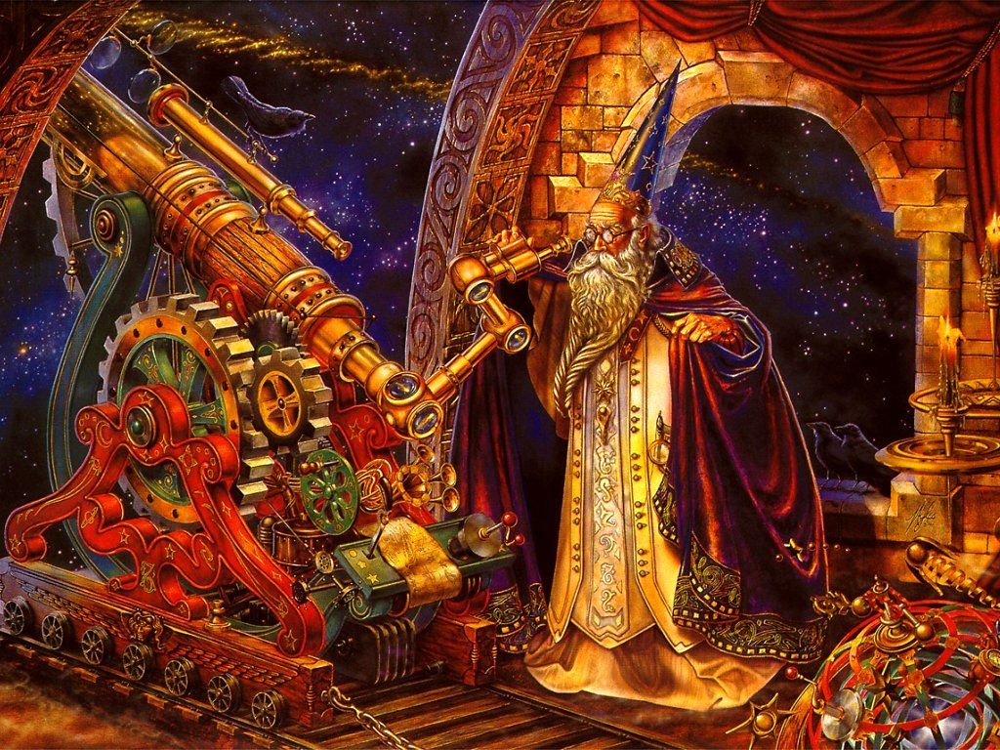

The Wizard's Tower
I love wizards
wizards are real, I'm sure of it.
I've seen a few myself.
Here's a Haiku about wizards
Smoke rings and fireworks
A wizard arrives just in time
Though not sure why
Wizards can cast spells, use forces, do magic, and hold an extreme wisdom.
here is a cool image of a wizard.
